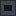

説明
①子ども 大きく描いた回路の原図を、写真で小さく縮めてガラスの板に写す大きなカメラ。
②学生 電気 1kW（照明）。原図（減らない）＋感光乾板＋現像液（硫酸鉄(II)）＋定着液（ハイポ）→ フォトマスク（30秒）。作り方：色消しレンズ×2＋水銀灯の管＋送りねじ＋鉄×3＋銅ケーブル。
③大人 1960年ごろ、IC の原図は大きな台の上で赤いフィルム（ルビリス）を手で切り抜いて作り、それを写真で何百分の一にも縮めてマスクにした。最初の IC の回路図は、手でフィルムを切り抜いて作った。
④ガチ 本物は2段で縮めた：原図を写真で縮めて「レチクル」にし、それをステップ・アンド・リピートのカメラで縦横に何百回も焼きつけて、ウェハー1枚分のマスクにした。レンズのゆがみと色のにじみがそのままマスクの誤差になるので、色消しの専用レンズを使った。
作り方
使い道
（このアイテムを使うレシピは無い）